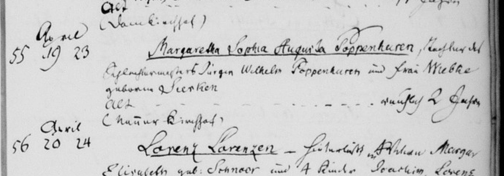

Search Target
Name
Margaretha Sophia Augusta Poppenhausen
Record Type
Death (Bestattung)
Parish
Schleswig-Domgemeinde
Year
1828
Source Book
Navigate to this book on Archion.de
All Archives/Schleswig-Holstein/Landeskirchliches Archiv der Evangelisch-Lutherischen Kirche in Norddeutschland/Kirchenkreis Schleswig-Flensburg/Schleswig-Domgemeinde/Bestattungen 1823-1856
Record Found
✓ Death Record Located — Entry #55
Death Record
Margaretha Sophia Augusta Poppenhausen
Entry 55 • Bestattungen 1823-1856 • Page 51
| Entry Number | 55 |
|---|
| Date of Death | April 19, 1828 |
|---|
| Date of Burial | April 23, 1828 |
|---|
| Full Name | Margaretha Sophia Augusta Poppenhausen |
|---|
| Age | Approximately 2 years old (ungefähr 2 Jahre) |
|---|
| Relationship | Tochter (daughter) |
|---|
| Father | Jürgen Wilhelm Poppenhausen, Ehehandlungsgesell (trade/commerce journeyman) |
|---|
| Mother | Wiebke, geborene (née) Treshen |
|---|
Original German Transcription
55. April 19 / 23
Margaretha Sophia Augusta Poppenhausen, Tochter des
Ehehandlungsgesell Jürgen Wilhelm Poppenhausen und Frau Wiebke
geborene Treshen
Alt: - - - - - - - - - - - ungefähr 2 Jahre
(Natur Kirchhof)
English Translation
Entry 55. [Died] April 19 / [Buried] April 23 [1828]
Margaretha Sophia Augusta Poppenhausen, daughter of
trade journeyman Jürgen Wilhelm Poppenhausen and [his] wife Wiebke
born Treshen
Age: approximately 2 years
(Buried at the Nature Churchyard)
Page Image

Click to zoom
Family Connections
This record identifies Jürgen Wilhelm Poppenhausen as the father, with wife Wiebke née Treshen. This is the same Jürgen Wilhelm whose other daughter (Maria Margaretha Ulrica, age 4) died in 1817 (Bestattungen 1769-1823, page 280, entry 22). In the 1817 record, his wife was listed as “Maria Margaretha Christina née Schütt” — suggesting Wiebke Treshen is a second wife.
Note: Jürgen Wilhelm Poppenhausen is not the same person as Wilhelm Friedrich Poppenhusen (who married Anna Maria Schmidt in 1775). The relationship between Jürgen Wilhelm and Wilhelm Friedrich is unknown.
Citation
Schleswig-Domgemeinde, Bestattungen 1823-1856, entry 55, p. 51, death of Margaretha Sophia Augusta Poppenhausen (19 Apr 1828); Archion.de, volume 274887; accessed 01 Mar 2026.
Suggested Next Steps
- Search for Jürgen Wilhelm Poppenhausen’s own death record to learn more about this branch
- Search for the marriage of Jürgen Wilhelm Poppenhausen and Wiebke Treshen (second marriage, likely ~1825-1827)
- Search for the marriage of Jürgen Wilhelm Poppenhausen and Maria Margaretha Christina Schütt (first marriage, likely ~1810-1815)
- Continue searching other parishes for Wilhelm Friedrich Poppenhusen’s death record